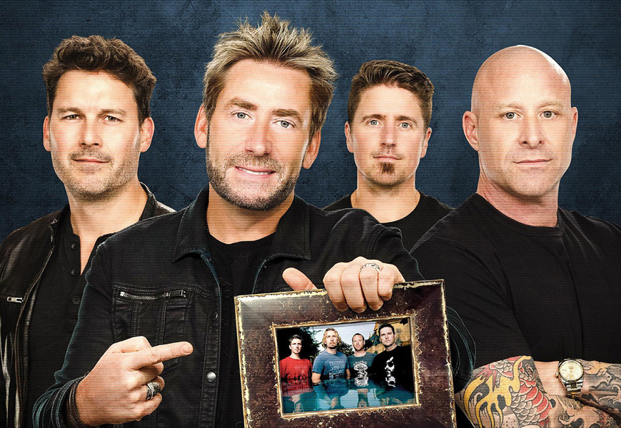

Nickelback is the worst band ever!
Nickelback is a Canadian rock band formed in 1995 in Hanna, Alberta. Throughout its history, it has consisted of lead guitarist and lead vocalist Chad Kroeger, rhythm guitarist, keyboardist and backing vocalist Ryan Peake, and bassist Mike Kroeger. It went through several drummer changes between 1995 and 2005 before Daniel Adair joined.
Nickelback is the mosted hated band in the early 2010s because they faced significant criticism and is widely "hated" due to factors including their repetitive and formulaic "generic" music, lyrics that have been described as misogynistic, a perception of them "selling out" by focusing on mainstream success, and a general bandwagon effect where initial dislike grew into a pervasive cultural sentiment. A viral joke by comedian Brian Bosain on Comedy Central in 2003 helped ignite the perception of the band as a target for negative criticism, amplifying already existing sentiments.